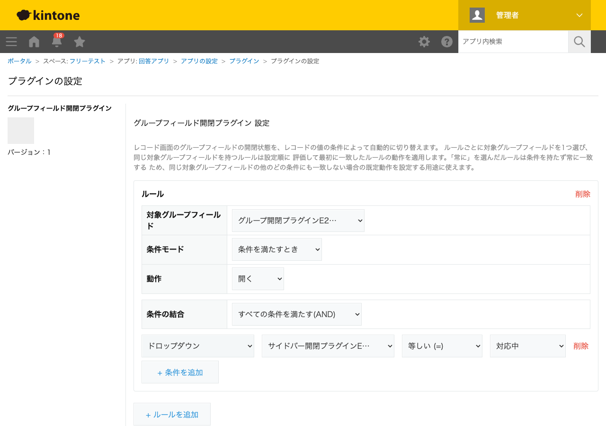

GovAppsプラグイン 安全性を確認できる無料kintoneプラグイン集
レコード画面のグループフィールドの開閉状態を、レコードの値の条件によって自動的に切り替えます。 ルールごとに対象グループフィールドを1つ選び、日時・ラジオボタン・ドロップダウン・ チェックボックス・プロセス管理ステータスを組み合わせた条件(AND/OR結合)、または「常に」で 開く/閉じるを設定できます。同じ対象グループフィールドに複数のルールを設定した場合は、 設定順で最初に一致したルールが優先されます。
「差し戻し理由」や「詳細情報」のようなグループフィールドを、通常は折りたたんで画面をすっきり見せておき、ステータスが「差し戻し」になったときだけ自動的に開いて担当者の注意を引く、といった使い方ができます。
1つのアプリに複数のグループフィールドがある場合、それぞれ独立した条件(担当部署・案件区分など)で開閉させることができます。入力項目の多いフォームでも、今関係のある情報だけを自動的に開いた状態で見せられます。
PC(レコード詳細・追加・編集・印刷画面)・モバイル(レコード詳細・追加・編集画面)の両方に対応しています。同じ対象グループフィールドを持つルールは設定順に評価し、最初に一致したルールの動作が適用されます。「常に」を選んだルールは条件を持たず常に一致するため、既定動作として使えます。
kintoneセキュアコーディングガイドラインに沿って実装時にチェックしています。特に重要な点は次のとおりです。
kintone.app.record.setGroupFieldOpen()/kintone.mobile.app.record.setGroupFieldOpen())のみで行います。kintone.api()(kintone自身への呼び出し専用の内部ラッパー)経由でGET /k/v1/app/status.jsonを呼びます。外部サーバーへの通信・外部ライブラリは一切使用していません。textContentまたは<template>要素のcloneNodeで行っており、innerHTMLへの外部由来文字列の埋め込みはありません。詳細な確認項目・確認日は下記GitHubのチェックリストに全項目を掲載しています。

レコード画面側はsetGroupFieldOpen()というJavaScript APIのみで完結し、REST APIは
実行しません。設定画面を開いたときのみ、プロセス管理のステータス名一覧を取得するためにREST API
(GET /k/v1/app/status.json)を1回実行しますが、これは管理者が設定画面を開いたときだけ
であり、レコードの閲覧・保存のたびに実行されるものではありません。